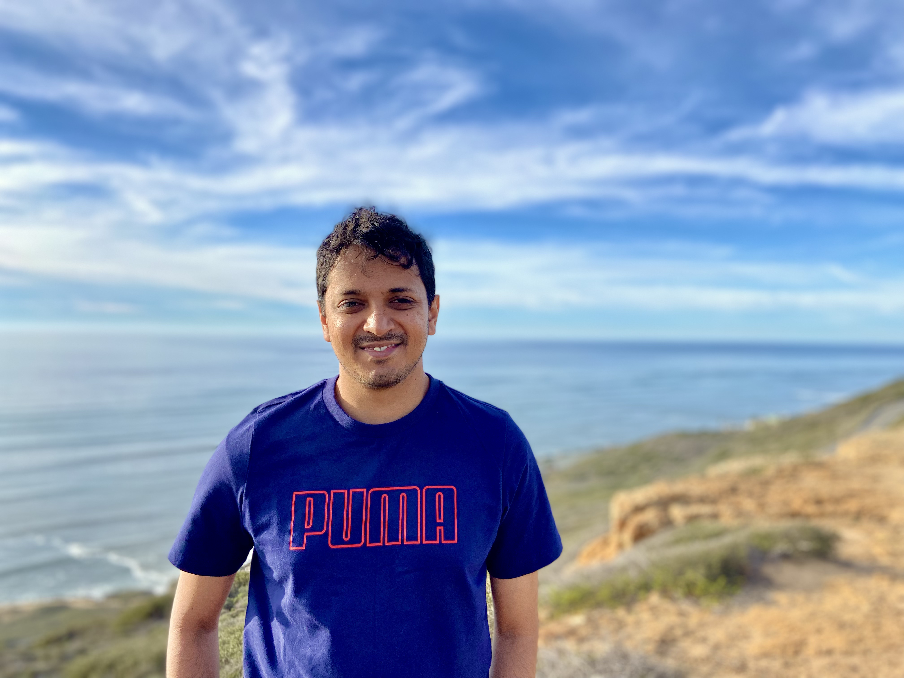

I am a Postdoctoral Researcher at the Values-Centered Artificial Intelligence (VCAI) initiative at the University of Maryland, College Park. My research lies at the intersection of Human-Computer Interaction (HCI) and Accessibility. I study the socio-technical dimensions of access and design novel technologies that center the capabilities of people with disabilities. I use community-based participatory research (CBPR) and qualitative methods to center community knowledge and create sustainable interventions. I hold a Ph.D. degree in Information from the University of Michigan, where I was a Rackham Predoctoral Fellow. I have held research roles at Microsoft Research and Google Research, where my work informed Soundscape and Palm2 respectively.
Human-Computer Interaction, Accessibility, Disability Studies, Marginality, Global South
[October 2025] Hosting a workshop on the state of Accessibility Research in the Global South at ASSETS '25 (with Tamanna Motahar)
[September 2025] Joined the CHI '26 program committee on Accessibility and Aging
[September 2025] Talk at the United Spinal Association on how AI can enhance the job search process for People with Spinal Cord Injury (kudos to my amazing student collaborators Nupur Wagle, Prasshanna S, and Shaunak Mirashi)
[September 2025] Paper on a Taxonomy of AI Harms for Disability published at AIES '25 (with the amazing Lining Wang and Hernisa Kacorri)
[August 2025] Honored to be recognized as a finalist for the prestigious Diana Forsythe Award at the American Medical Informatics Association conference (congrats to first-author Alicia Williamson)
[May 2025] Leading the NSF TRAILS undergraduate summer research program with Farnaz Zamiri
[March 2025] Talk at the Department of Rehabilitation Services - State of Maryland on Disability Discrimination in AI-mediated Hiring
